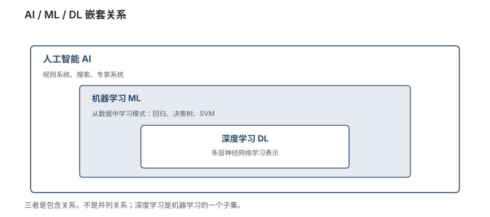
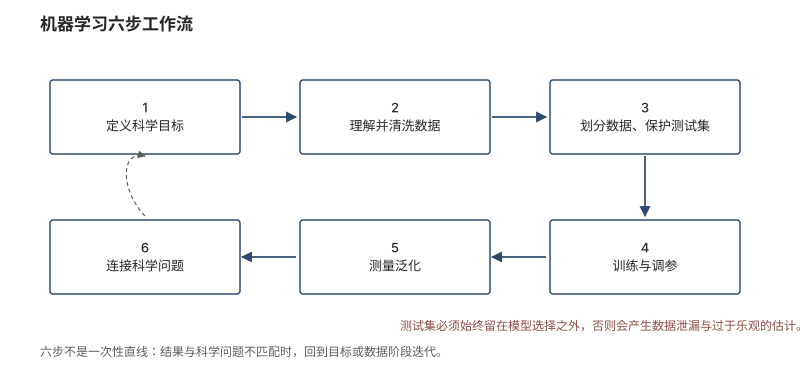

SCI101 · 第 2 章
AI 与机器学习：概念与区别
AI vs Machine Learning
虚线下划线为术语；悬停查看中文、英文与释义，完整词典见“术语”。
本章目录
本讲先把 AI、机器学习与深度学习三个词拆开，再用“输入—模型—输出—行动”描述一个 AI 系统，最后给出机器学习问题的五个要素与六步工作流，并说明模型常见的四种失败方式。
本章要点
- AI 是让系统感知、处理、推理并行动以达成目标；ML 是从数据中学习模式而非只靠手写规则；DL 是用多层网络学习表示。
- 一个 AI 系统连接“环境信息”与“支持目标的输出”，其能力与自主程度差别很大。
- “为什么是现在”的答案是数据、算力、方法三者的相互作用，任一单独都不足以保证有用。
- 机器学习问题的五要素：问题、数据、表示、模型、评估。
- 传统编程是“规则 + 数据 → 答案”，机器学习是“数据 + 答案 → 规则（模型）”。
- 六步工作流的关键纪律是：测试数据必须始终留在模型选择之外，否则会产生泄漏与过于乐观的估计。
- 四种常见失败：数据问题、过拟合、欠拟合、目标错配。
2.1 AI 的定义：窄 AI 与通用 AI
讲义对 人工智能artificial intelligence 的定义是：设计与开发能够推理（reason）、学习（learn）并自主行动（act autonomously）的系统；换言之，是造出能完成“若由人来做则需要智能”的任务的机器。这个定义包含四个关键动作：
- 用传感器或数据感知环境（perceive）；
- 处理并理解这些信息（process and understand）；
- 基于理解进行推理或决策（reason or make decisions）；
- 行动以达成特定目标（act）。
讲义把这类系统称为窄 AInarrow AI：它在限定任务上工作。与之相对的是通用 AIgeneral AI，其特征被概括为“完全自主”（full autonomy）。两者的差别不在模型大小，而在任务范围与自主程度。
L1b p.3
2.2 AI、机器学习与深度学习：包含关系
讲义开篇就用一个不等号强调“Artificial Intelligence ≠ Machine Learning”。三者是逐层包含的关系，而不是同义词：
| 层级 | 讲义定义 | 关键差别 |
|---|---|---|
| 人工智能 | 从输入推断输出、以达成显式或隐式目标的系统 | 范围最大，包含规则系统 |
| 机器学习 | 从数据中学习模式、而非只依赖手写规则的一类方法 | 规则来自数据，不来自程序员逐条编写 |
| 深度学习 | 具有多个处理层、能学习有用表示的机器学习 | 特征由多层网络自己学，不必人工设计 |
这个层级解释了课程中的许多说法。例如“深度学习是机器学习的一个子集”，因为多层网络仍属于“从数据学模式”；而“专家系统是 AI 但不是 ML”，因为它靠人写规则，不靠数据拟合。

绘图提示词
Clean vector nested concentric diagram with three labelled rings: outer ring Artificial Intelligence, middle ring Machine Learning, inner ring Deep Learning, each ring annotated with a one-line definition in small text. Flat 2D, thin 1.5 px strokes, muted slate blue and warm grey palette, white background, English labels, no cartoon, no gradient, no shadow.
L1b p.2、p.5
2.3 一个 AI 系统在做什么
讲义把任何 AI 系统抽象成一条链：环境中的数据进入模型，模型表示模式与关系，输出预测、内容、推荐或决策，最后由人或自动系统采取行动。链条始终服务于一个目标（objective）。
讲义给的空气质量例子把每一环都具体化了：传感器数据是污染物读数；模型学到的是污染物与空气质量类别之间的关系；输出是空气质量类别；行动是复核或发布预警。这个例子的价值在于说明“模型只是链条中的一环”——数据来源、输出形式与下游行动同样决定系统是否有用。
讲义还特别提示：系统的能力与自主程度差别很大，许多有用的系统只是在更大的人类工作流中执行一个定义明确的任务。因此评价一个 AI 系统时，问“它在链条的哪一环、替代了人的哪一步”比问“它有多智能”更有意义。
L1b p.4
2.4 为什么是现在：数据、算力、方法
讲义用三个词解释这一波 AI 的时机，并强调它们是相互作用的：
- 数据data：数字仪器、仿真与共享数据集提供了更多可供学习的样本；
- 算力compute：GPU 与分布式系统使更大规模的训练与更快的实验成为可行；
- 方法methods：新架构、优化方法与软件更有效地利用已有的数据与算力。
讲义的原话是一条重要的判断准则：“A strong algorithm cannot rescue unsuitable data, and more compute does not guarantee a useful model.”（强算法救不了不合适的数据，更多算力也不保证有用的模型。）这句话在考试中常以反向表述出现，例如“只要有足够算力，模型一定更好”——这是错的。
另一处相关论述来自“计算的力量”：大约每五年算力提升十倍；人类设定的“巧妙”结构在规模扩大时往往成为瓶颈；长期看好的东西在短期内几乎必然显得糟糕。讲义因此主张给机器更多自由度，让它们自己选择如何学习。
L1b p.6、p.32
2.5 方法演进：从规则到基础模型
讲义把 AI 方法的变化分成四个阶段，并强调它们共存而非替代：
- 早期 AI（early AI）：专家把符号、规则与搜索过程编码进系统；
- 统计机器学习（statistical ML）：模型从数据中估计关系，完成定义好的任务；
- 深度学习（deep learning）：多层网络直接从复杂数据中学习有用特征；
- 基础模型（foundation models）：一个广泛预训练的模型可适配多种任务。
讲义配套给出一条时间线，可作为“里程碑—年份”配对题的记忆锚点：1985 年受限玻尔兹曼机（Boltzmann machine）、1986 年反向传播（backpropagation）、2006 年深度信念网络与自编码器预训练/微调、2009 年 ImageNet、2012 年 AlexNet、2014 年 GAN、2015 年 VAE、ResNet 与流模型（flow models）、2016 年 AlphaGo、2017 年 Transformer、2020 年 AlphaFold2、2022 年 ChatGPT，2024 年诺贝尔奖授予 Hopfield 与 Hinton，理由是“为使用人工神经网络的机器学习奠定了发现与发明基础”。
| 年份 | 模型/事件 | 意义 |
|---|---|---|
| 1986 | Backpropagation | 多层网络可训练 |
| 2012 | AlexNet | 深度网络在 ImageNet 上突破 |
| 2014 / 2015 | GAN / VAE | 两类生成模型范式 |
| 2017 | Transformer | 注意力架构，生成式 AI 的主流骨架 |
| 2020 | AlphaFold2 | 蛋白质结构预测 |
讲义还用“再多的香蕉也无法激励猴子去做数学”比喻基础模型的门槛：模型必须先达到某个复杂度，外部的激励结构才可能生效。基础模型在海量多样数据上预训练，获得对语言、图像等模式的广泛理解；此后一个设计良好的提示或少量微调，就能引导它完成此前不可能的任务。若模型本身不够复杂，它可能放弃学习可泛化的技能，转而依赖启发式的模式识别。
GPT 把这件事拆成两步：训练学习下一个词的概率，生成反复应用这些概率。上下文经 Transformer 注意力得到隐藏表示，输出下一个词的概率分布（讲义示例：oxidation 34%、heating 21%、contamination 12%、其他 33%），选一个词追加到上下文后重复。讲义用“打字机猴子”作反例：随机敲键让几乎每个续写机会均等，有意义的段落极其罕见；训练则把概率集中到符合语言模式与上下文的续写上。
L1b p.7、p.23、p.11、p.33–34
2.6 数据形态与机器学习问题的五要素
讲义按“观测如何变成特征”把科学数据分为四类：表格（tables，如病人测量、化合物性质）、序列（sequences，如 DNA 与蛋白质、传感器时间序列）、图像与场（images and fields，如显微图像、卫星观测）、文本与记录（text and records，如论文、实验记录）。表格常用固定字段（fixed fields），图像与文本更多依赖学习到的特征（learned features）。
在此基础上，一个机器学习问题被拆成五个要素：
- 问题question：哪个科学决策或模式是重要的？
- 数据data：有哪些观测与结果可用？
- 表示representation：每个观测如何进入模型？
- 模型model：算法要学习哪种关系？
- 评估evaluation：如何在未见数据上检验有用性？
空气质量例子对应为：问题——污染物测量能否区分四个空气质量类别；数据——每行传感器读数带一个类别标签；表示——筛选并缩放后的污染物特征；模型与评估——用留出数据与合适的性能指标比较各分类器。
L1b p.8–9
2.7 传统编程 vs 机器学习
讲义用两个方向相反的箭头概括区别：传统编程的输入是“规则 + 数据”，输出是“答案”；机器学习的输入是“数据 + 答案”，输出是“规则”，也就是模型。前者由人分析问题、写出 if-then-else 逻辑；后者由人提供通用学习算法与大量数据，计算机运行算法找出模式并自行推断规则。
工资例子把差别量化了。加班规则是：前 40 小时按标准时薪，超出部分按 1.5 倍。传统写法是显式判断工作时长是否不超过 40 小时（hours_worked ≤ 40）；机器学习写法则只给样例：(30, 20) → 600、(40, 20) → 800、(50, 20) → 1100、(45, 15) → 712.5，让算法自己拟合出关系。垃圾邮件过滤同理：手写规则（含“win money”即判为垃圾）僵化、无法捕捉新型垃圾邮件；给算法上千封已标注邮件，它能发现人写不出的复杂规则。
两个经典定义必须能复述。Arthur Samuel：机器学习是“让计算机在不被显式编程的情况下获得学习能力”的研究领域。Tom MitchellTom M. Mitchell 的三元组定义：若一个程序在任务 T 上的性能 P 随经验 E 而提高，则称它从经验 E 中学习。
L1b p.10；Wang slide 3–7
2.8 六步工作流与数据泄漏
讲义把实践流程压缩成六步：定义科学目标（question）→ 理解并清洗数据（data）→ 划分数据、保护测试集（split）→ 训练与调参（fit）→ 测量泛化（evaluate）→ 把结果与科学问题连接（interpret）。
其中最容易被违反的是第三步与第五步之间的关系。讲义的原话是：把测试数据留在模型选择之外，否则信息会泄漏进工作流，产生过于乐观的性能估计。这就是数据泄漏data leakage：测试集的信息在训练或调参阶段被间接使用。

绘图提示词
Clean vector horizontal six-step workflow diagram with numbered boxes: question, data, split, fit, evaluate, interpret, with a separate locked test-set box below connected only to the evaluate step and marked do not touch during model selection. Flat 2D, thin 1.5 px strokes, muted slate blue and warm grey palette, white background, English labels, no cartoon, no gradient, no shadow.
与六步配套的是训练与推理的区分：训练用带目标的样例 (X, y) 拟合参数，得到一个训练好的模型；推理把新的 X 输入该模型得到预测。讲义把这条链画成“训练样例 → 学习算法 → 训练好的模型 → 新 X → 预测”，并明确训练（training）与推理（inference）是两个阶段。
L1b p.16、p.10
2.9 四种失败模式
讲义用一张表列出模型失败的四种典型方式，并要求能由“观察到的现象”反推“属于哪种失败”：
| 失败模式 | 你会观察到 | 实际应对 |
|---|---|---|
| 数据问题 | 缺失值、偏差、测量误差或泄漏扭曲了信号 | 拟合前检查来源与质量，尽早分离测试数据 |
| 过拟合 | 训练表现强，新数据上性能下降 | 用验证集、控制复杂度、补充更有代表性的数据 |
| 欠拟合 | 训练与验证表现都弱 | 改进表示，或使用容量合适的模型 |
| 目标错配 | 指标在提升，但结果没有回答科学问题 | 建模前先定义预期决策与成功标准 |
过拟合在神经网络训练中有典型曲线：训练损失可以一直下降，而验证损失在某一轮之后开始上升；两者分岔的位置就是应该早停（early stopping）的位置。讲义给出的四条应对是：使用验证集；在验证性能变差前停止训练；控制容量或做正则化；把测试集留给最终的性能估计。
“目标错配”最容易被忽视：模型指标变好不等于科学问题被回答。讲义因此要求先定义“预期的决策与成功判据”，再开始建模。
L1b p.15、p.21
2.10 神经网络的位置与架构匹配
讲义把人工神经网络artificial neural network描述为受大脑启发、由分层互连节点组成的网络，是深度学习的核心，也是连接主义（connectionist）范式的基础。三类层分工明确：输入层接收原始数据；隐藏层承担大部分计算，隐藏层很多时称为深度神经网络；输出层产生预测。每条连接有一个权重weight，训练就是调整这些权重以改进预测。
单个感知机perceptron的结构是：输入 x₀…xₙ 乘以权重 w₀…wₙ，求和得到 z，再经过激活函数得到输出。写作：
讲义强调“网络架构跟随数据结构”，即不同连接方式隐含了对信息组织方式的不同假设：表格向量用全连接网络，图像与场用卷积网络，序列或文本用 Transformer 或循环网络，分子或网络结构用图神经网络。讲义同时声明这些是常见搭配而非硬性规则，混合模型可以组合多种结构。
在表格数据的实例中（电池浆料配方是否通过质检），输入是 pH、导电添加剂、黏度等测量值，小规模全连接网络学习特征间的非线性组合，输出通过概率，最后在留出数据上评估并做误差分析。讲义给出的实践准则是：与更简单的基线比较；如果简单模型表现相当且更易解释，就用简单模型。
L1b p.17–22